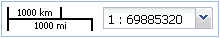
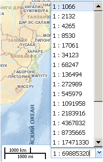

Панель отображения и регулирования масштаба
В правом нижнем углу рабочего окна карты размещена панель отображения и регулирования масштаба. Отображение текущего масштаба проекта осуществляется в двух форматах: линейном (в километрах и милях) и числовом.

Окошко числового отображения масштаба можно использовать для его дискретного регулирования. Значение необходимого масштаба отображения карты выбирается в ниспадающем списке, содержащем 20 значений масштабов – от 1:1 066 до 1: 559 082 565.
